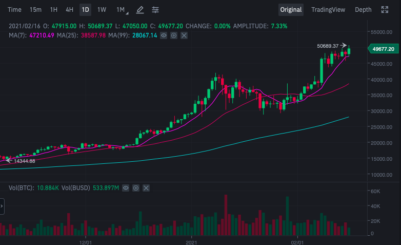

Evys
Ціна криптовалюти Bitcoin продовжує зростати та сягнула позначки у 50 689 доларів 16 лютого. Про це йдеться у даних криптовалютної біржі Binance. Після рекорду у 49 977 доларів, ціна Bitcoin почала знову знижуватися. Так, станом на 12:30 за Києвом криптовалюта котирувалася на рівні 48 942 долара (+2,34% за добу). Оновлено: Станом на 14:00 за Києвом криптовалюта перевищила позначку в 50 тисяч доларів і коштувала 50 689 доларів.
Ціна біткоїна наближається до психологічного бар'єра в $50 тисяч